- 日期：2026-06-04（时间均为页面显示时间，即美西时间；北京时间 = 显示时间 + 15 小时）
- 今日发帖数：19 帖（02:43 – 14:29），50 张配图已存至
jason_images/2026-06-04/
今日要点速览
今天 Jason 的信息量集中在四条主线：第一，"去美元化"的黄金叙事拿到了里程碑数据——黄金占全球央行外储 27%、30 年来首超美债（日经/ECB），WGC 显示央行 4 月重新增持，瑞银则提醒这个趋势从 2008 年就开始了，高盛继续看 2026 年底金价 $5,400。第二，美国宏观出现"财政好于预期 + AI 裁员潮 + 通胀压力"的组合：中信建投下修美国赤字至 1.9 万亿，Challenger 数据显示 AI 已成裁员头号理由，泰国大米暴涨 20% 预示食品通胀传导，美联储年内加息概率被押到 70%。第三，中国侧聚焦"存量盘活"财政新路数与人口长周期：存量土地补缴出让金、保障房收购装入 REITs 化债，对照浙大老龄化论文（2033 年进入重度老龄化、养老金当期结余转负窗口）和考研报名三连降、程序员岗位"优化"过半的就业图景。第四，市场策略层面，大摩上调中国 GDP 但强调"双速经济"，亚洲策略看好商品链/日本/韩台科技链，JPM 测算韩国股市财富效应，俄乌和谈与美伊谈判则是地缘上的两颗变量。
帖 1（02:43）中国新闻网：70 岁了，这资产还想着 2 个人分？ #TAX
帖子原文：
中国新闻网：70岁了，这资产还想着2个人分？#TAX 举一反三，如果不是闹离婚，都得给下一代继承，这笔代际转移的规模绝对不是小数目

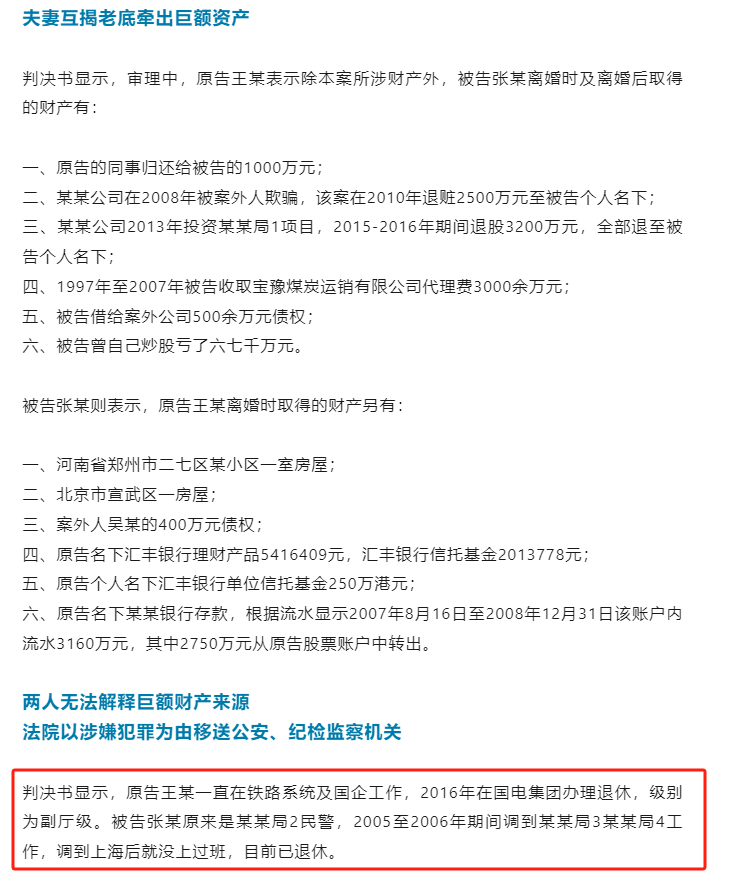
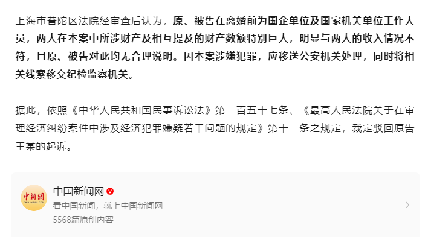
一句话核心：借一桩"国企退休干部离婚分割近亿财产、因财产与收入不符被移送公安纪检"的案件，引出中国民间财富代际转移规模巨大、且基本无税这个观察。
背景与关键数据：上海普陀区法院判决书显示，原告王某（1954 年生，铁路系统及国企工作、国电集团副厅级退休）起诉分割夫妻共同财产 9870 万元、14 处不动产；双方互揭的资产包括 3000 余万元煤炭运销"代理费"、数千万元银行流水、汇丰理财与信托等。法院认定财产数额明显与收入不符且无合理解释，驳回起诉并移送公安、纪检监察。
图片解读：三张图是中国新闻网文章截图——第一张是裁定书与案件基本事实（红框：请求分割 9870 万元、14 处不动产）；第二张列出双方互揭的六大笔资产来源；第三张是法院"涉嫌犯罪、移送公安"的处理结果。
为什么重要：Jason 打上 #TAX 标签的用意在评论区被点破（球友："意思是可以收税"）——中国第一代积累财富的人群正进入 70+ 高龄，遗产/赠与的代际转移洪峰已经开始，而中国目前没有遗产税和赠与税。在土地财政退坡（见帖 5）背景下，财产类税收是中长期最值得跟踪的政策方向。另一条评论也值得记下："留在手里花不出去……否则 TS（转移支付）还得继续"。
延伸知识：遗产税在 OECD 国家很常见（日本最高边际税率 55%、韩国 50%），通常配合"赠与税"防止生前转移避税。可以延伸思考：若开征，对房产（14 处不动产这类）、保险金信托、离岸资产的影响完全不同——这也是近年高净值人群热衷保险金信托和新加坡家族办公室的原因之一。
帖 2（02:54）自制图表：读研不再吃香 #自制图表
帖子原文：
读研不再吃香 #自制图表
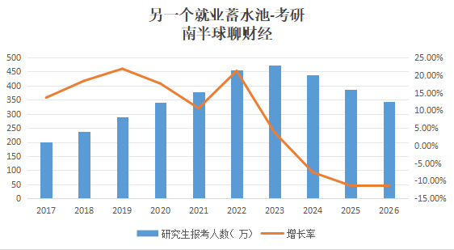
一句话核心：考研报名人数连续第三年下降，"考研作为就业蓄水池"的功能正在退潮。
背景与关键数据：图为 Jason 自制（落款"南半球聊财经"）。研究生报考人数从 2017 年约 200 万一路升至 2023 年约 474 万的峰值，随后 2024 年约 438 万、2025 年约 388 万、2026 年约 341 万——增长率从 2022 年 +21% 左右转为连续三年负增长（-8% 到 -11%）。
图片解读：柱状图（左轴）是报考人数（万人），折线（右轴）是同比增长率。重点看折线的"倒 V"形态：2019-2022 年高增长对应的正是就业市场收缩、毕业生"延迟就业"涌向考研；2024 年起折线跌入负区间且持续在 -10% 上下，说明这不是一年的波动而是趋势反转。
为什么重要：考研降温的另一面是学历溢价缩水——读研三年的机会成本（放弃的工资 + 学费）越来越难被毕业后的薪资差覆盖，尤其叠加帖 19 的"程序员优化"：高学历密集的行业自己在收缩。对宏观的含义：蓄水池不再蓄水，年轻人失业压力会更直接地体现在就业数据和消费上。
延伸知识：经济学里这叫教育的信号模型（Spence）：学历的价值部分来自"筛选信号"而非技能本身。当研究生供给暴增、岗位收缩时，信号贬值，理性人就会退出"信号军备竞赛"。日本 1990 年代后也出现过类似的"高学历通缩"，伴随的是非正式雇佣比例上升。
帖 3（11:24）zerohedge：伊朗谈判无进展，美股板块轮动 #金融
帖子原文：
zerohedge：伊朗表示，近期与美国就临时和平协议的谈判无进展。看得出特朗普保持克制，美股板块轮动，道琼斯工业平均指数——主要由摩根大通和可口可乐等知名传统股票组成，攀升至创纪录。博通对人工智能芯片销量的预测令那些期待更多增长的投资者感到失望，这让他们重新开始思考科技股，EM市场股票也被影响。油价下跌也依然带动了美债利率下跌，交易员预计美联储在2026年底前加息的概率约为70%，并且确定明年3月会加息。
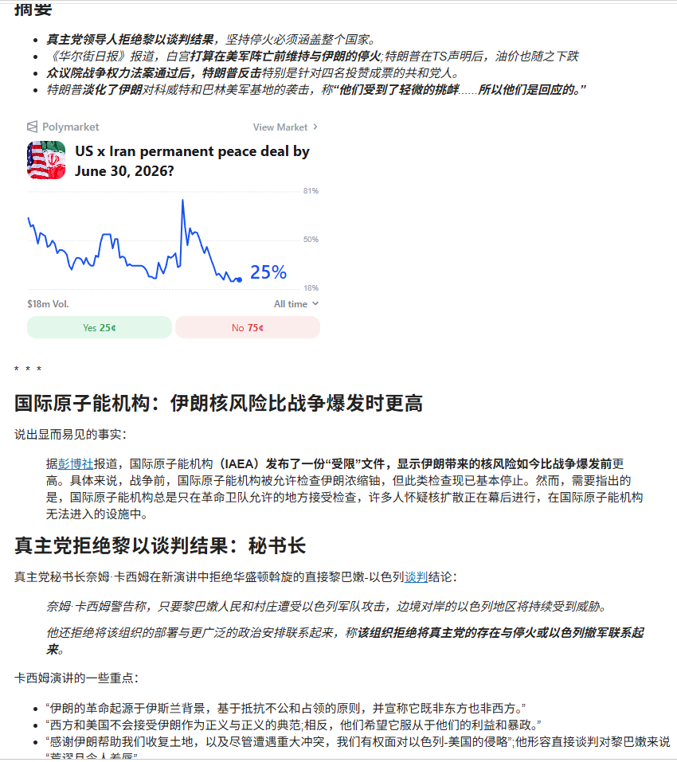
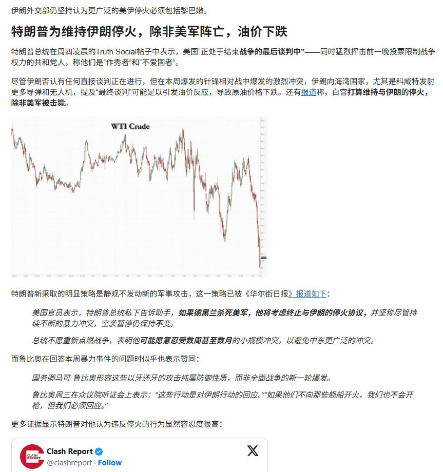
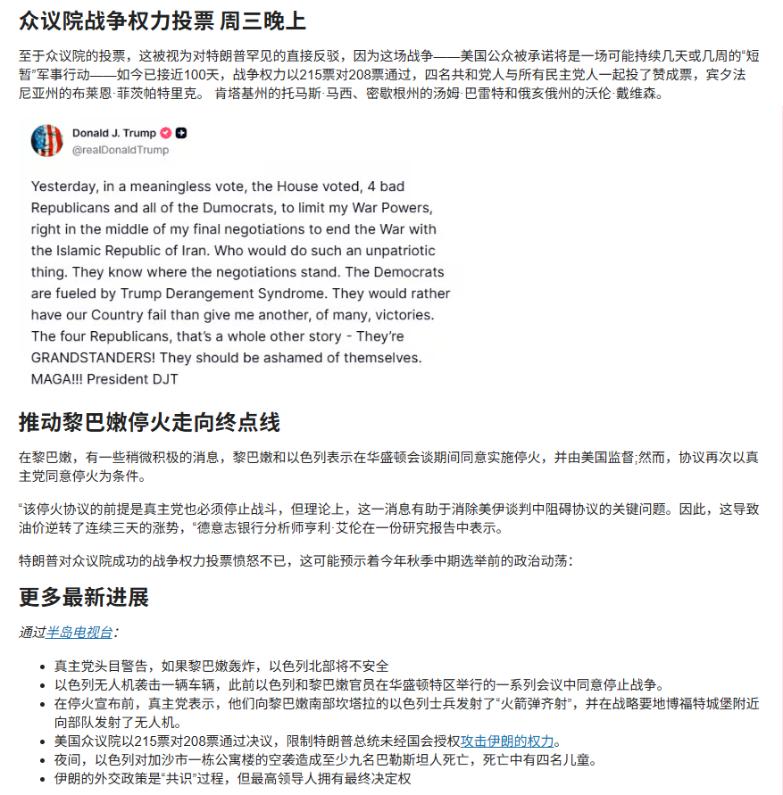
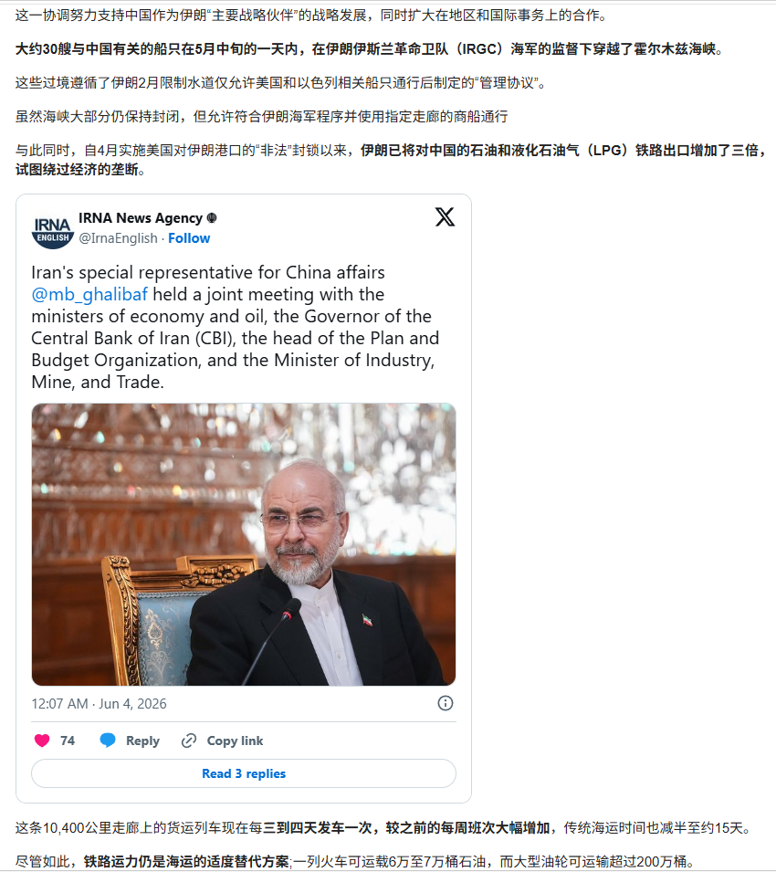
一句话核心：美伊和谈僵局 + 博通 AI 指引不及预期，资金从科技股轮动到道指传统蓝筹；油价下行压住美债利率，但市场仍押注联储年内加息（注意：是加息，概率约 70%）。
背景与关键数据：这条信息密度很高——①地缘：美伊"临时和平协议"谈判无进展，Polymarket 上"6 月 30 日前达成美伊永久和平协议"的概率已跌到约 25%，IAEA 称伊朗核风险比战争爆发时更高，真主党拒绝交武；②股市：道指创新高 vs 科技股被博通指引泼冷水，典型的"防御/价值轮动"；③利率：油价下跌→通胀预期回落→美债利率下行，但期货市场仍定价 2026 年底前加息概率 70%、明年 3 月加息几成定局——说明当前是通胀重启周期，与 2024-25 年的降息叙事完全调了个头。
图片解读：四张 zerohedge 文章截图——图 1：Polymarket 和平协议概率走势（跌至 ~25%）+ IAEA 表态；图 2：WTI 原油价格走势（回落）+ 特朗普维持停火的论述；图 3：特朗普 Truth Social 原帖（拿众议院投票说事）；图 4：IRNA 推文——伊朗对华事务特别代表率经济、石油部长及央行行长开会，中伊经贸合作是伊朗的对冲牌。
为什么重要：对资产价格的直接含义：油价是当前美债利率和联储路径的关键自变量。地缘缓和→油价跌→利率压力减轻→成长股喘息；反之若谈判破裂，能源冲击叠加 AI 资本开支的通胀压力（参考帖 10 大摩的"异常不确定"），加息预期会更激进。
延伸知识：**板块轮动（sector rotation）**是观察牛市健康度的常用视角：科技领涨多年后轮到道指创新高，既可解读为"牛市扩散"（健康），也可解读为"资金避险"（防御性蓝筹接棒往往出现在周期后段）。配合帖 10 大摩"EM 反弹是周期性而非结构性"，Jason 倾向后者的概率更大。
帖 4（11:31）WGC：央行 4 月重新增持黄金 #金融
帖子原文：
WGC：央行在三月份的显著抛售后，已在四月重新开始增持黄金。波兰仍是本月最大买家，而中国则加快了采购步伐。与此同时，俄罗斯本月继续保持净卖出。不过黄金的另一股力量——黄金ETF最近仍显疲软，可能因为部分投机流动性转向了科技产业。
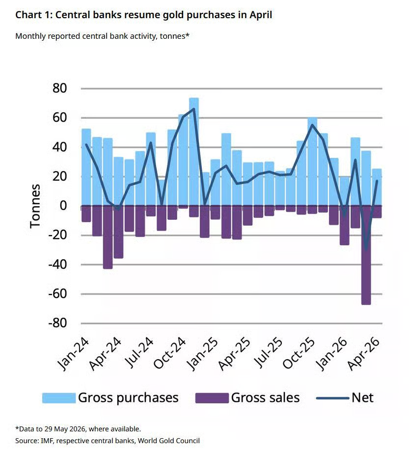
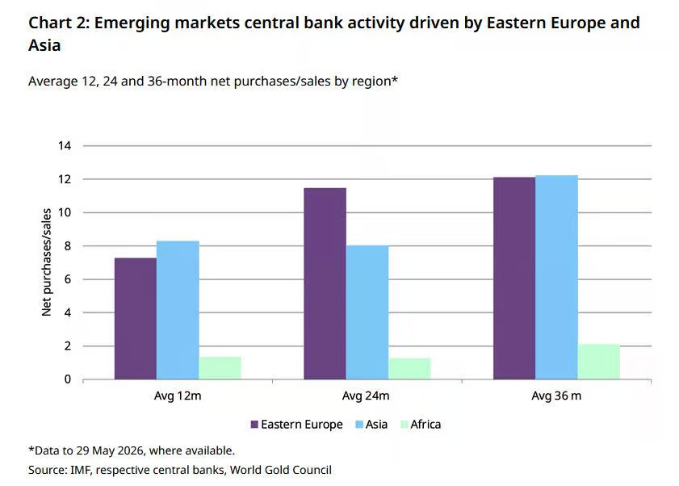
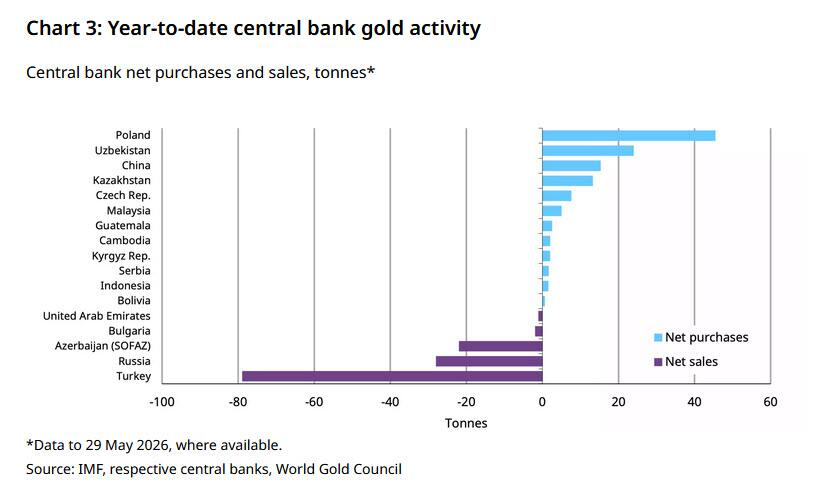
一句话核心：世界黄金协会月度数据：央行购金在 3 月罕见净卖出后 4 月转回净买入；买盘主力是波兰和中国，卖方是土耳其、俄罗斯；黄金 ETF（投机盘）反而疲软。
背景与关键数据：央行购金是 2022 年以来金价最重要的边际买家（每年 1000 吨上下）。年初至今（数据截至 5 月 29 日）：波兰 +45 吨居首、乌兹别克斯坦 +24、中国 +15、哈萨克斯坦 +14；净卖出方：土耳其 -78、俄罗斯 -28、阿塞拜疆 SOFAZ -22（产金国/财政承压国卖金换流动性是常态）。
图片解读：图 1（Chart 1）：2024 年 1 月至 2026 年 4 月央行月度购金（浅蓝）/售金（深紫）/净额（深线）——3 月有一根罕见的 -65 吨左右大额卖出，4 月净额转正约 +10 吨；图 2（Chart 2）：分地区 12/24/36 个月平均净买入，东欧与亚洲是绝对主力（约 7-12 吨/月），非洲很小；图 3（Chart 3）：年初至今分国家净买卖横条图，左侧大卖家土耳其/俄罗斯，右侧大买家波兰/乌兹别克/中国。
为什么重要：央行是"长钱"，ETF 是"快钱"。当前格局是长钱稳步买、快钱被 AI 股吸走——这解释了金价高位但缺乏 ETF 助推的状态。若科技股回调（帖 3 的博通信号），投机流动性回流黄金可能成为下一波金价催化剂；这也是高盛敢喊 $5,400（帖 16）的需求侧基础。
延伸知识：注意区分央行购金的两种动机：储备多元化（波兰、中国——增持是战略性的、价格不敏感）与财政性卖出（土耳其、阿塞拜疆——卖金是被动的）。看懂谁在买谁在卖，比只看净额更有信息量。
帖 5（11:35）经济观察报：地方靠存量土地依然能拿财政收入 #TAX
帖子原文：
经济观察报：地方通过存量土地依然可以获得财政收入 #TAX
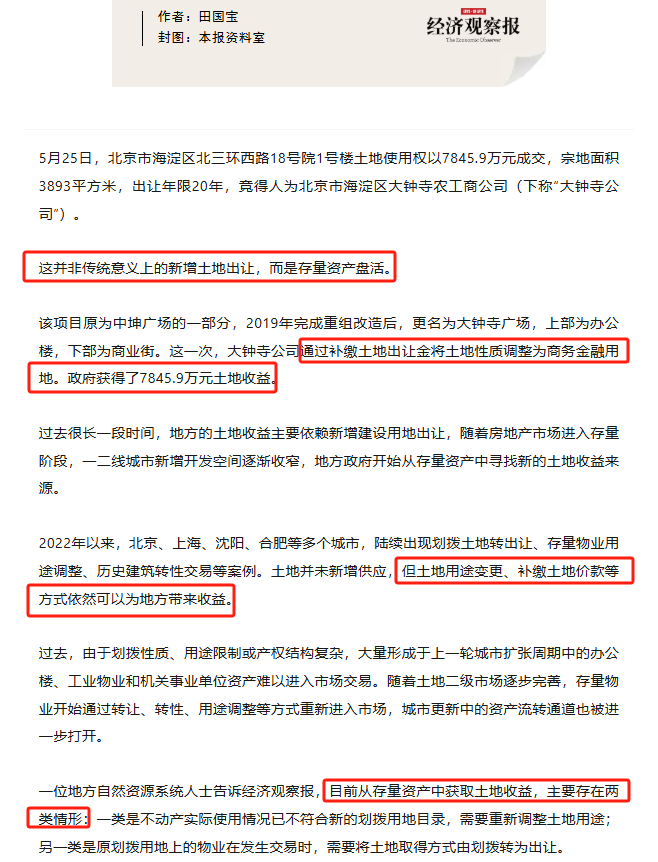
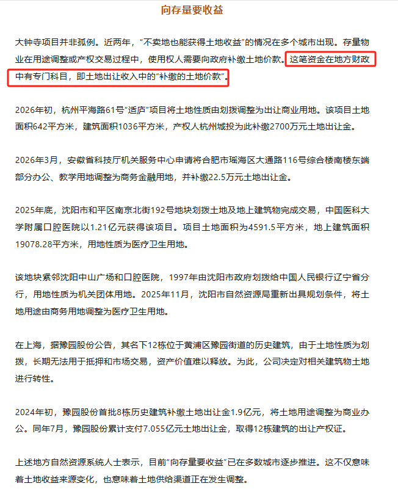
一句话核心：土地财政正在从"卖新地"切换到"盘活存量"——通过土地用途变更、补缴出让金，地方政府从已出让/划拨的旧土地上继续挖出收入。
背景与关键数据：文章核心案例：北京海淀大钟寺地块，原划拨性质，通过补缴 7845.9 万元土地出让金把土地性质调整为商务金融用地——"这并非传统意义上的新增土地出让，而是存量资产盘活"。类似操作已在杭州（适庐项目补缴 2700 万）、合肥（22.5 万）、沈阳（口腔医院 1.21 亿取得划拨地项目）、上海（豫园股份 12 栋历史建筑累计支付 7.055 亿出让金转性）等多城落地。地方财政里甚至有专门科目："补缴的土地价款"。
图片解读：两张文章截图。第一张讲大钟寺案例与两类情形（实际用途与划拨目录不符需调整用途；划拨地上物业交易时补缴）；第二张"向存量要收益"罗列各城市案例，红框点出这笔钱在地方财政中有专门科目。
为什么重要：2021 年土地出让收入约 8.7 万亿是地方财政支柱，如今新增出让大幅缩水。这篇报道揭示的是土地财政 2.0：城市更新、划拨转出让、用途变更都是收入来源——虽然规模远小于巅峰期卖地，但它改变了"土地财政已死"的简单叙事。与帖 13（保障房 REITs）连起来看：存量资产的金融化（补缴转性 → 可交易 → 可证券化）是地方化债与财政转型的主线。
延伸知识：中国土地分出让（有偿、有期限，可交易）与划拨（无偿、限定用途，不可自由交易）两类。大量计划经济时期和城市扩张期形成的划拨地（机关、国企厂房、事业单位物业）一直是"沉睡资产"，转性补缴相当于政府对存量资产"二次收费"，企业则换来资产的流动性——双方各取所需。
帖 6（11:41）中信建投：美国财政其实好于预期 #其他国家经济 #金融
帖子原文：
中信建投：年初，市场曾预期美国赤字升至2-2.2万亿，赤字率升至6.5%+；美伊战争、IEEPA关税退款、中期选举、长债大跌等叠加，财政恶化担忧加剧。 但数据显示，今年财政实际上好于预期，我们下修全年赤字至1.9万亿、赤字率至6%。不过今年传统的收支部分产生的赤字，仍显著高于去年，主因美丽大法案的减税和退税。年初袭击委内瑞拉，3月袭击伊朗，目前带来的军事增支暂不明显。美债收益率曲线在3-4月整体上移近50BP，这一期间滚动和新增的国债利息成本相应提升。若当前收益率维持全年，则额外付息成本上升预计在200亿附近。但整体看，目前收益率走高的幅度，额外贡献的赤字规模相对有限。截至4月，净利息支出同比增长7%，低于去年的8.5%。总体看，美国财政的恶化风险可控，对美债的影响或最直接，偏利好。
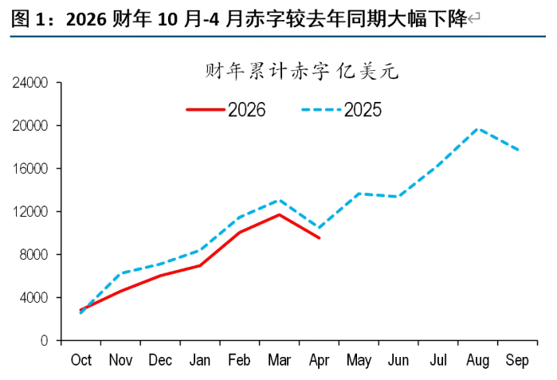
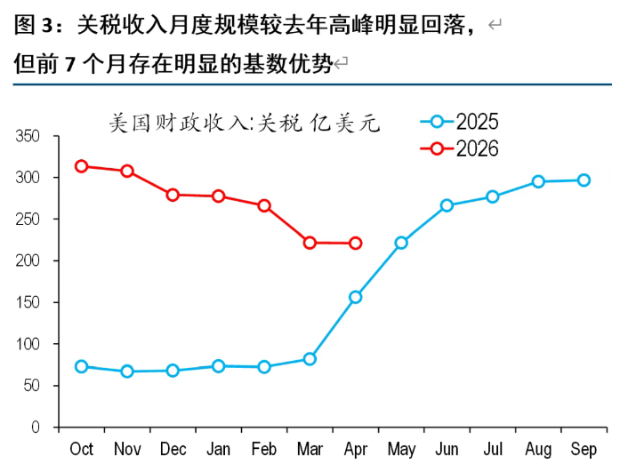
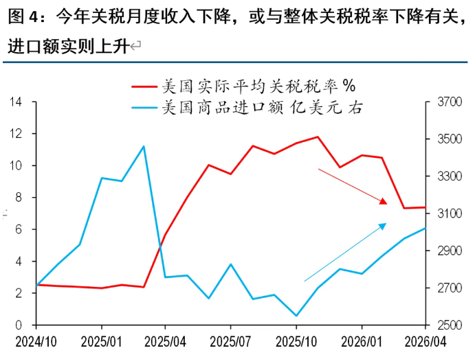
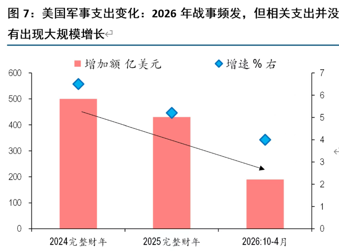
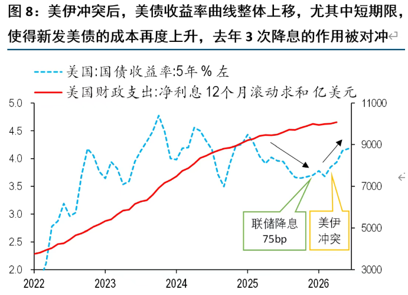
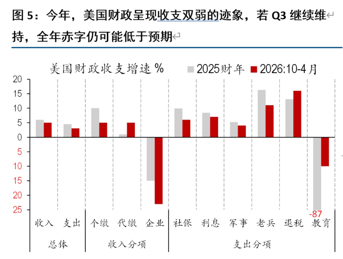
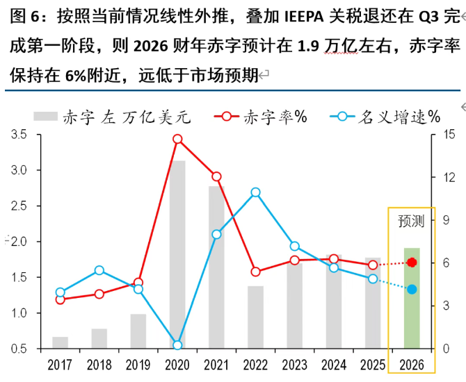
一句话核心：与年初的恐慌相反，2026 财年美国赤字反而低于去年同期，中信建投把全年赤字预测从 2-2.2 万亿下修到 1.9 万亿（赤字率约 6%），结论：对美债偏利好。
背景与关键数据：几个关键数字——①财年前 7 个月（10-4 月）累计赤字约 9500 亿美元，明显低于去年同期约 1.07 万亿；②关税收入月度从年初约 310 亿美元/月回落到约 220 亿，原因是实际平均关税税率从约 11.8% 降到约 7.3%，但进口额回升；③战事频发（年初袭击委内瑞拉、3 月袭击伊朗）但军事增支不明显：2026 财年 10-4 月军事支出仅增约 190 亿（增速 4%），低于 2024/2025 全年的 500 亿/430 亿；④美伊冲突推升收益率曲线 50BP，把联储去年 75bp 降息的成本节约对冲掉了，但额外付息约 200 亿、可控。
图片解读：图 1：财年累计赤字 2026（红实线）vs 2025（蓝虚线），红线全程在下方；图 2（原图 3）：关税月度收入两年对比——2026 前 7 个月有"高基数优势"（去年同期关税还没加上来）；图 3（原图 4）：实际平均关税税率（红，左轴）与商品进口额（蓝，右轴）反向走——税率降、进口升；图 4（原图 7）：军事支出增加额与增速逐年回落；图 5（原图 8）：5 年期美债收益率与净利息支出 12 个月滚动值，标注"联储降息 75bp"被"美伊冲突"对冲；图 6（原图 5）：收支增速双弱（企业税 -23%、教育支出 -87% 最扎眼）；图 7（原图 6）：线性外推 2026 赤字 1.9 万亿、赤字率 6%，"远低于市场预期"。
为什么重要：美债是全球资产定价之锚。市场一直交易"美国财政不可持续"的叙事（期限溢价走高、长债大跌），如果实际赤字持续低于预期，长端美债的尾部风险溢价有回落空间——这与帖 8（外国投资者持有美债占比降到 30%）形成有趣的对照：买家结构在恶化，但供给压力暂时小于恐惧。注意 IEEPA 关税退款是潜在变数（若最高法院裁定关税违法需退款，财政会瞬间恶化）。
延伸知识：IEEPA（国际紧急经济权力法）是特朗普加征关税援引的法律依据，正在司法挑战中——这就是"IEEPA 关税退款"风险的来源：已收的几千亿关税理论上可能要退。另一个概念是净利息支出：美国财政最大的"刚性增量"，目前年化已超 1 万亿美元，利率每高 50bp，滚动续作的成本就多一截，这是联储政策与财政可持续性绑定的根本原因。
帖 7（11:51）Challenger：AI 成为美国裁员的头号理由 #其他国家经济
帖子原文：
Challenger：美国科技公司在五月份宣布近两年来最多的裁员，同时加大对人工智能的投入。具体数据，科技行业上月表示计划裁撤38,242个职位，为2024年8月以来最多。与此同时，过去五个月私营部门的裁员总数较去年同期下降了7%，进一步强化了大多数行业持续存在的"低雇佣、低解雇"环境的形象。 今年前5个月累计，裁员被归因到人工智能的总数为87,714次，占2026年裁员总数的22%，远超2025年全年的54,836次。"人工智能现在是公司裁员的主要理由。"好消息是，截至2026年5月，美国雇主已宣布80,472名计划招聘，略高于2025年同期公布的79,741人。
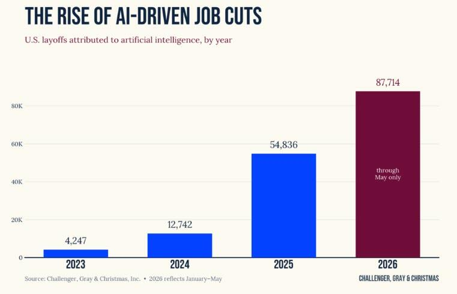
一句话核心：美国整体就业市场"低雇佣低解雇"，但科技行业例外——5 月裁员近两年最高，且 AI 归因裁员前 5 个月已达 8.77 万、超过去年全年总和。
背景与关键数据：Challenger, Gray & Christmas 是统计企业"宣布裁员计划"的老牌机构（领先于官方失业数据）。AI 归因裁员的爆炸曲线：2023 年 4,247 → 2024 年 12,742 → 2025 年 54,836 → 2026 年仅前 5 个月 87,714，三年翻了 20 倍，已占全部裁员理由的 22%。
图片解读：单张柱状图"THE RISE OF AI-DRIVEN JOB CUTS"，四根柱子对应 2023-2026 年 AI 归因裁员数，最后一根深红色标注"through May only"（仅到 5 月）——视觉冲击点就是：不到半年已超去年全年 60%。
为什么重要：这是大摩"AI disruption"叙事（帖 10）的就业端证据：AI 资本开支拉动硬件/电力/半导体的同时，白领岗位被替代的速度在加快。对美国宏观，这意味着就业市场的分化——总量数据稳（裁员总数同比 -7%）但结构恶化集中在高薪科技岗；对中国读者，对照帖 19（54% 程序员公司在"优化"），两国的程序员都在经历同一场 AI 替代浪潮。
延伸知识：经济学里这叫**技能偏向型技术变革（SBTC）**的反转版：过去三十年技术进步偏爱高技能白领，AI 这轮却首先冲击中高端认知岗位（编程、客服、文案），蓝领体力岗反而最后被波及——这会改变收入分配和高等教育回报率（呼应帖 2 考研降温）。
帖 8（12:00）日经：黄金占央行外储 27%，30 年来首超美债 #金融
帖子原文：
日经：在2025年全球央行的外汇储备中，黄金的占比达到27%，约30年来首次超过美国国债的比例。欧洲中央银行（ECB）在2日公布了上述消息。美国国债的占比从2023年的26%降至22%。欧元资产的份额保持在15%不变。
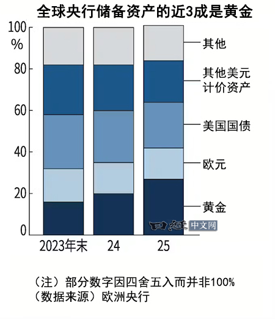
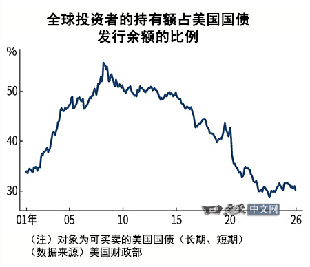
一句话核心：ECB 官方确认：黄金在全球央行储备中的占比（27%）约 30 年来首次超过美国国债（22%）——"去美元化"从叙事变成了账面事实。
背景与关键数据：这个 27% 是按市值计算的——金价两年翻倍是占比飙升的主因（量价齐升：既有帖 4 的增持，更有估值效应）。美债占比从 2023 年 26% → 22%，欧元稳定在 15%。
图片解读：图 1：日经中文网堆叠柱状图，2023 末/2024/2025 三年储备结构——黄金（最下深色块）从约 16%→20%→27% 逐年抬升，美国国债块相应收缩；图 2：更扎心的长图——全球投资者持有美债占发行余额的比例从 2008 年峰值约 57% 一路降到 2026 年约 30%，2020 年后加速下行。
为什么重要：两张图合在一起讲一个故事：美债的边际买家在退场（外国持有占比 30%，意味着新增美债越来越靠国内银行、货币基金和美联储消化），而黄金作为"无对手方风险"的储备资产接棒。这是金价长牛最底层的逻辑，也是美债期限溢价中枢上移的结构性原因。结合帖 9（瑞银考证起点是 2008 而非 2022），Jason 连发四帖黄金（4、8、9、16），今天显然在系统性梳理这条线。
延伸知识：储备资产的核心诉求是安全性、流动性、收益性的排序。2022 年俄罗斯外储被冻结让各国意识到美债的"安全性"含有政治条件，黄金虽无利息但无法被冻结——这就是"武器化美元的代价"。历史参照：1971 年布雷顿森林体系解体前，各国央行也是先囤黄金再退出美元锚。
帖 9（12:03）瑞银：央行购金潮始于 2008，不是 2022 #金融
帖子原文：
瑞银：官方部门黄金持有量的增加始于2008年全球金融危机期间，而非2022年（约85%的增长发生在2008年8月至2022年2月之间，之后约15%）。虽然制裁风险显然加速并强化了这一趋势，但根本原因是全球金融危机促使新兴市场重新评估先进经济体资产的安全性，2008年至2022年间，仅有六个国家——俄罗斯、中国、土耳其、印度、波兰和哈萨克斯坦——几乎占据了官方黄金持有量的全部增长。
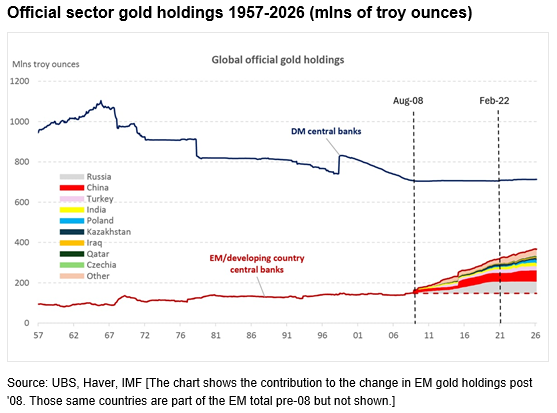
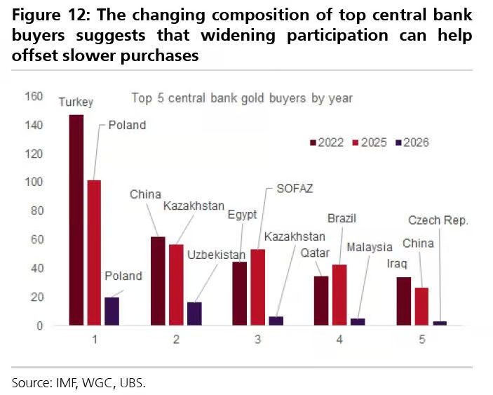
一句话核心：瑞银给黄金叙事纠偏：央行购金不是 2022 年制裁后才开始的应激反应，而是 2008 年金融危机后就启动的 18 年长趋势——制裁只是加速器。
背景与关键数据：85% 的官方黄金持有量增长发生在 2008.8–2022.2 之间；且高度集中——俄、中、土、印、波、哈六国包揽了几乎全部增量。2008 年的触发点不是地缘而是"先进经济体资产还安不安全"：雷曼倒闭、QE 印钞让新兴市场重新评估美元资产的信用风险。
图片解读：图 1 是非常好的长周期图（1957-2026 官方黄金持有量，百万盎司）：发达国家央行（深蓝线）从 1960 年代约 1100 一路减持到 2008 年约 700 后停止卖出；新兴市场央行（红线）在标注 Aug-08 的虚线后开始抬升，Feb-22 后斜率再陡——彩色堆叠区分国家贡献；图 2（Figure 12）：历年前五大买家构成对比，2022 年土耳其一家独大（约 148 吨），2025-2026 年变成波兰、中国、捷克、巴西等更分散的多国小额买入——瑞银的观点是"参与面变宽能弥补单家购买放缓"。
为什么重要：搞清趋势起点决定了你对持续性的判断：如果购金只是制裁应激，俄乌缓和（帖 17）就该结束；如果是 2008 年开始的储备体系重构，那它跨越了利率周期和地缘事件，还有很长的尾巴——更多中小央行刚刚开始追赶（捷克、乌兹别克等）。这直接支撑帖 16 高盛的长期看多。
延伸知识：特里芬难题的当代版：美元既要当全球储备货币（要求美国持续输出美元=贸易逆差），又要保持币值信用（要求财政纪律）——两者长期矛盾。2008 年 QE 是第一次大规模"信用稀释"，新兴市场用脚投票买黄金，本质是在为"后美元时代"买保险。
帖 10（12:21）大摩亚洲/EM 策略：异常不确定的世界，商品 > 服务 #股市
帖子原文：
摩根斯坦利：亚洲/新兴市场股票策略——整合短期观点与长期主题，现在的市场环境"异常不确定"，原因主要有两个：第一，全球能源冲击正在影响通胀、成本和利润率。第二，AI资本开支和AI disruption 同时发生，一边拉动半导体、存储、硬件、电力、能源和资本品，另一边冲击电商、IT服务、消费服务等行业。所以我们继续设置很宽的熊市到牛市目标区间。 看好：商品生产链条 > 服务业链条。重点集中在：能源；材料；工业；半导体；存储；资本品；AI相关基础设施；日本改革；韩国/台股科技链；巴西、希腊、匈牙利、沙特等部分市场。 不看好：汽车；消费；IT服务；电商；受上游商品涨价挤压的下游行业。这轮新兴市场上涨更像周期性反弹，而不是新一轮长期结构性牛市的开始。 中国整体盈利修正偏弱，尚未见到可持续的内生再通胀。日本是我们最看好的市场，通胀重启，进入持续名义增长时代。建议日本可以不对冲汇率投资，因为我们预期日元中等程度走强。提醒DRAM价格暴涨后，估值通常会早于基本面见顶。SK Hynix、三星、Micron这类资产基本面还在变好，不等于股价风险还很低。
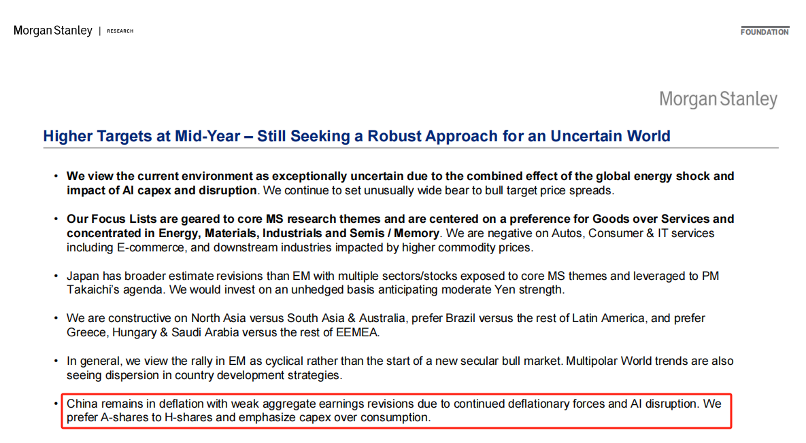
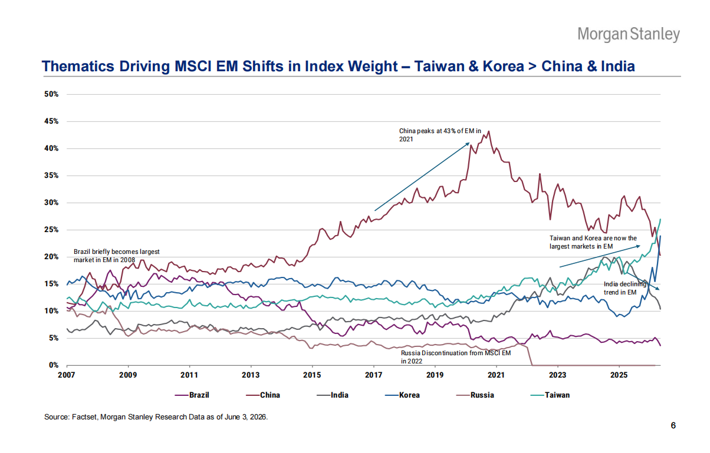
一句话核心：大摩年中展望：能源冲击 + AI 双刃剑造就"异常不确定"，策略上买商品生产链（能源/材料/半导体/存储）卖下游服务（电商/消费/IT 服务），最看好日本，提醒存储股"基本面变好≠股价没风险"。
背景与关键数据：几个值得抄笔记的判断——①EM 这轮上涨是周期性反弹而非结构牛起点；②中国仍处通缩、盈利修正偏弱，大摩偏好 A 股 > H 股、资本开支 > 消费（图 1 红框原文）；③日本进入"持续名义增长时代"，且建议不对冲日元（预期日元走强，赚股价+汇率双重收益）；④存储链警示：DRAM 涨价周期里估值见顶通常早于基本面见顶——点名 SK 海力士、三星、美光。
图片解读：图 1：大摩报告《Higher Targets at Mid-Year》首页六条要点，红框是中国部分（通缩 + AI disruption 压盈利、偏好 A 股与 capex）；图 2：2007-2026 MSCI EM 指数中各国权重变迁——中国 2021 年见顶 43% 后一路下滑，台湾+韩国合计已超过中国+印度成为 EM 最大权重（AI 硬件改变了指数结构），俄罗斯 2022 年被直接剔除，印度近期也在走低。
为什么重要：这帖是今天的"策略总纲"：它把帖 3（科技股动摇）、帖 7（AI 裁员）、帖 11（食品/能源涨价）、帖 14（韩国牛市）全部串进一个框架——通胀重启环境下，利润在向上游迁移。对个人投资者最实用的两条：日本不对冲汇率的逻辑，和存储股"卖在估值见顶而非基本面见顶"的纪律。
延伸知识：**"估值先于基本面见顶"**是周期股的铁律：股价反映的是预期的二阶导（增长加速度），当涨价仍在继续但加速度放缓时，PE 先压缩——2018 年和 2021-22 年的存储周期都是如此（美光在 DRAM 现货价见顶前约两个季度股价见顶）。
帖 11（12:25）zerohedge：泰国大米暴涨 20%，食品通胀传导开始 #金融
帖子原文：
zerohedge：全球食品价格已经开始上涨，作为亚洲区域基准，泰国白米五月暴涨20%，创下自2008年以来最大月度数据增长，表明化肥和柴油价格上涨已开始通过更广泛的食品供应链传递。更糟糕的是，瑞银警告厄尔尼诺现象可能加剧亚洲食品通胀。
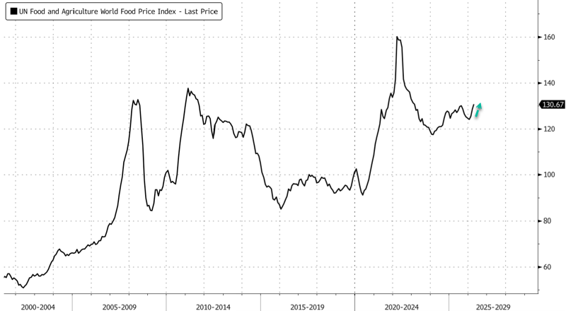
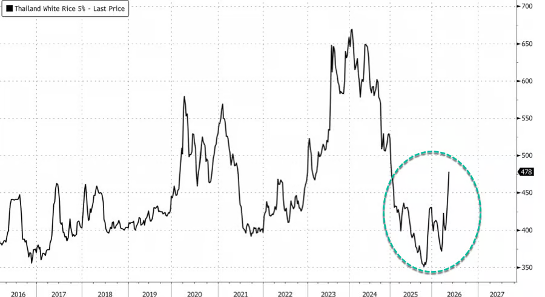
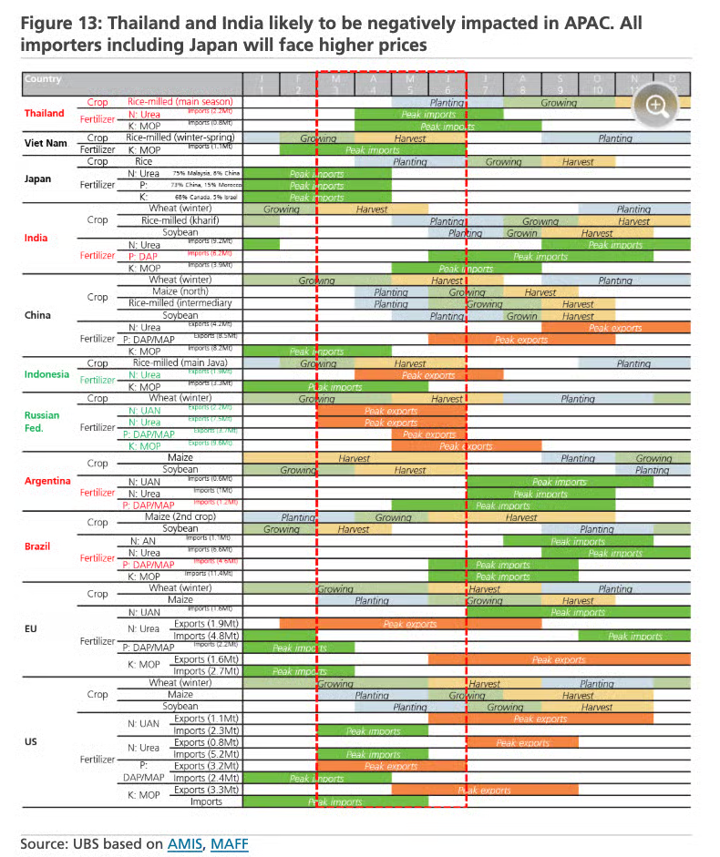
一句话核心：能源冲击正在沿"化肥/柴油 → 粮食"链条传导：泰国白米单月 +20% 创 2008 年以来最大涨幅，叠加厄尔尼诺风险，亚洲食品通胀升温。
背景与关键数据：泰国白米 5% 破碎率价格是亚洲大米的定价基准。化肥（天然气是合成氨原料）和柴油（农机+运输）是粮价的成本端先行指标——这次传导的源头正是帖 10 说的"全球能源冲击"。FAO 世界食品价格指数最新 130.67，从 2024-25 年的回落中重新抬头（2022 年俄乌冲突时峰值约 160）。
图片解读：图 1：FAO 食品价格指数 2000-2026 长周期——三轮大涨清晰可见（2008、2011、2022），当前从 120 平台再度上行；图 2：泰国白米价格 2016-2026，5 月从约 360 美元/吨跳到约 480，圈出的反弹陡峭程度仅次于 2008；图 3：瑞银表格（Figure 13），评估 APAC 各国受食品涨价的冲击度——泰国、印度受负面影响最大，包括日本在内的所有进口国都面临更高价格（表格较密，结论看标题即可）。
为什么重要：食品通胀是新兴市场的政治经济学：食品占 EM 国家 CPI 权重普遍 25-40%（美国仅约 13%），粮价大涨会迫使亚洲央行在经济没过热的情况下被动加息，还会引发出口禁令（2008 年越南、印度禁出口大米加剧恐慌）。对市场：这是帖 3 里"联储 2026 年还要加息"定价的全球背景，也是大摩看好上游商品链的又一注脚。
延伸知识：2008 年粮食危机就是"能源→粮食"传导的教科书案例：油价 147 美元 + 生物燃料抢粮 + 出口禁令，导致大米半年翻三倍、多国骚乱。记住链条：天然气→化肥（合成氨）→种植成本→粮价→EM 通胀→央行加息，每个环节滞后 2-6 个月。
帖 12（12:53）OECD 算命 #经济数据
帖子原文：
OECD算命 #经济数据
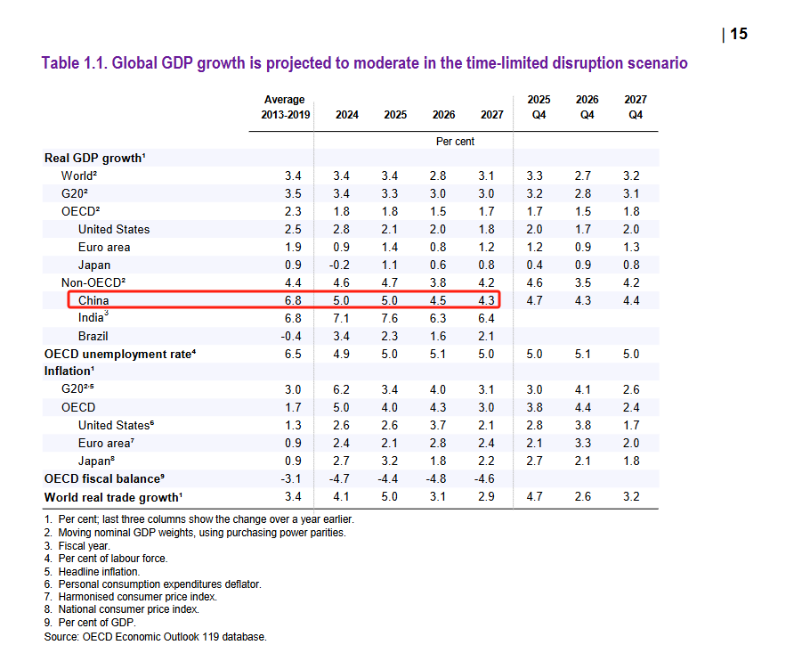
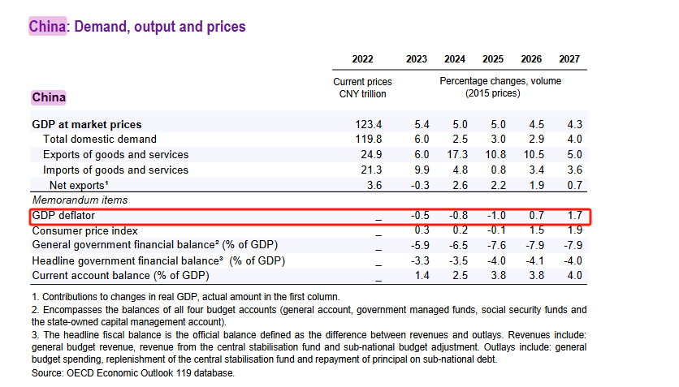
一句话核心：OECD 最新《经济展望》：2026 年全球增长 2.8% 放缓、2027 年 3.1% 回升；中国 4.5%/4.3%，且预测中国 GDP 平减指数 2026 年转正（+0.7%）——官方版"通缩明年结束"。标题"算命"二字代表 Jason 对机构预测的一贯态度：参考框架，别当真。
背景与关键数据：表里值得圈的数字——①世界实际 GDP：2026 年 2.8%（低于 2013-19 均值 3.4%）；②美国 2.0%/1.8%，欧元区 0.8%/1.2%，日本 0.6%/0.8%；③中国 4.5%/4.3%（红框），低于大摩刚上调的 4.8%（帖 15），两大机构有分歧；④通胀：G20 2026 年 4.0%（不低！），美国 3.7%——印证"通胀重启"；⑤中国明细表：出口量 2026 +10.8% 是增长主引擎，进口仅 +0.8%；GDP 平减指数 2023 至 2025 连续三年为负（-0.5/-0.8/-1.0），预测 2026 +0.7、2027 +1.7 转正；广义财政赤字达 GDP 的 -7.9%；经常账户顺差 3.8-4.0%。
图片解读：图 1：OECD 全球 GDP 预测总表（注意标题里"time-limited disruption scenario"——这版预测内嵌了"冲击有时限"的假设，本身就是个大假设）；图 2：中国分项表，红框 GDP 平减指数那一行是中国宏观最重要的单一指标——它连续为负就是"名义增长 < 实际增长"、企业增收不增利的数学根源。
为什么重要：如果平减指数真在 2026 年转正，意味着名义 GDP 增速回到实际增速之上，企业盈利、税收、居民收入的"体感"都会改善——这是 A 股盈利预期的胜负手。但大摩（帖 15）说"再通胀偏窄、尚未见可持续内生再通胀"，OECD 的转正预测更多依赖出口涨价；两者的分歧本身就是关注点。
延伸知识：GDP 平减指数（deflator）= 名义 GDP / 实际 GDP，是覆盖面最广的物价指标（包括投资品、出口品，而 CPI 只覆盖消费）。中国 2023-2025 平减指数连负三年，是 1990 年代末以来最长的通缩期——日本 1995-2013 年的经验显示，平减指数转正比 CPI 转正更难、也更关键。
帖 13（13:14）保障房收购 → 保障房 REITs：城投化债新通道 #TAX
帖子原文：
现在部分城市展开保障房收购，未来是可以放入保障房REITS的，只要收益率足够 #TAX
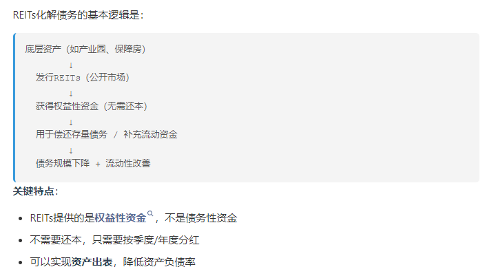
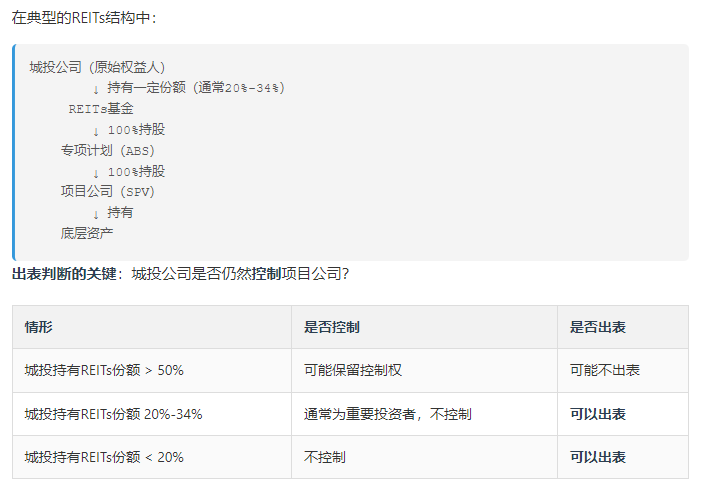
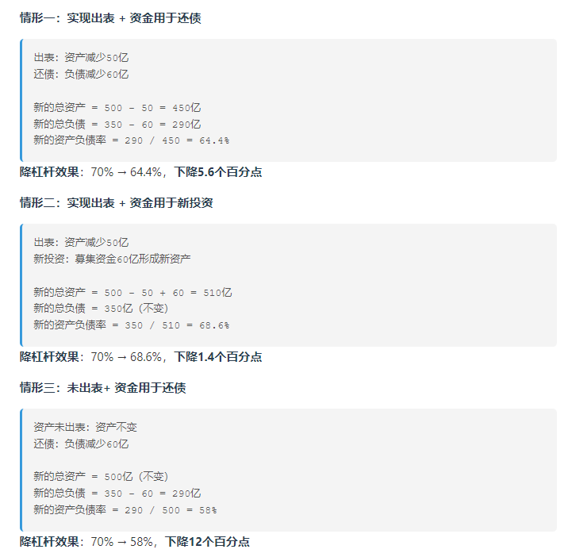
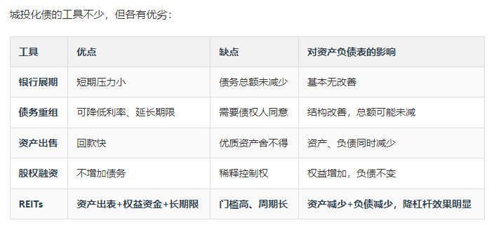
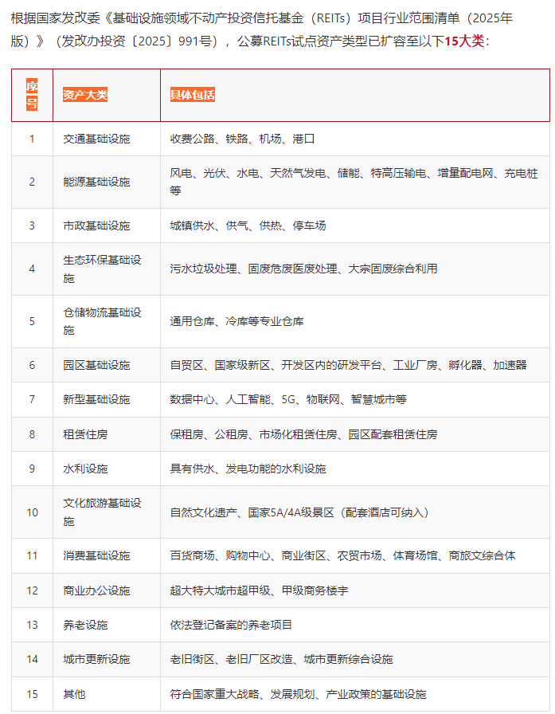
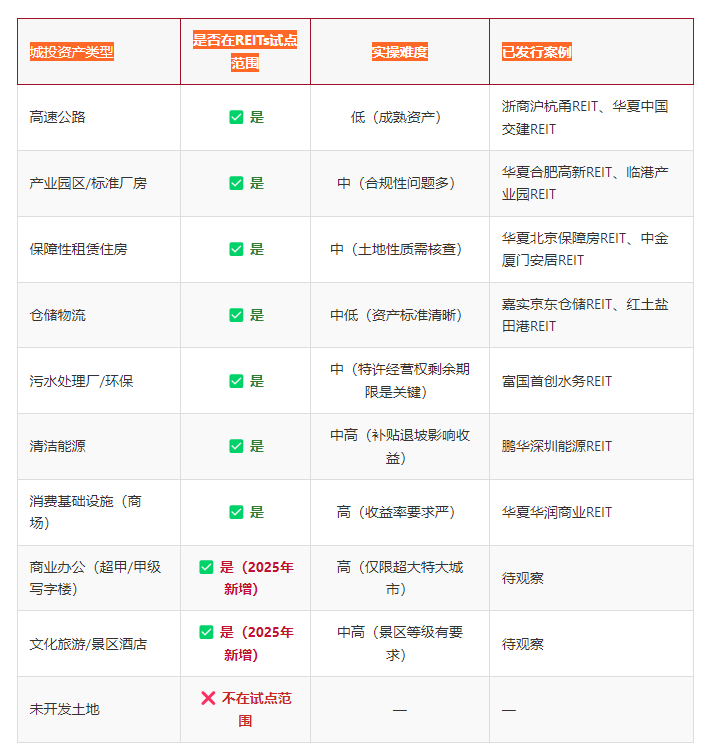
一句话核心：Jason 把三件事串成一条链：政府收购存量商品房做保障房 → 形成有租金现金流的资产 → 装入公募 REITs 上市，城投借此拿到"不用还本的权益资金"实现化债。
背景与关键数据：六张图是一份完整的"REITs 化债逻辑"笔记——①基本逻辑：底层资产（产业园、保障房）→ 发行 REITs → 获得权益性资金（无需还本，只需分红）→ 偿还存量债务 → 债务规模下降+流动性改善；②结构：城投（原始权益人）持有 REITs 份额通常 20%-34% → REITs 基金 → ABS 专项计划 → 项目公司 SPV → 底层资产；出表关键是城投是否仍"控制"项目公司（持有 <34% 通常可出表）；③量化测算：假设总资产 500 亿/负债 350 亿（负债率 70%）的城投，"出表+还债"可把负债率降到 64.4%，"未出表+还债"反而降到 58%（账面上）——不同路径降杠杆效果差异大；④政策依据：发改委 2025 年版 REITs 行业清单已扩到 15 大类，租赁住房（保租房、公租房）、商业办公、文旅（2025 新增）都在内；⑤城投资产与试点范围对照：保租房"是"（已有华夏北京保障房 REIT、中金厦门安居 REIT 等先例），未开发土地"否"；⑥化债工具对比：银行展期/债务重组/资产出售/股权融资/REITs，结论是 REITs"资产出表+权益资金+长期限，降杠杆效果明显"，缺点是门槛高、周期长。
图片解读：见上——六张图依次是流程图、股权结构图、三情景演算、政策清单、资产对照表、工具优劣对比表，本身就是一份可以收藏的"城投 REITs 化债"小抄。
为什么重要：这是中国房地产"政策组合拳"的闭环拼图：收储去库存（解决房企）→ 保障房供给（解决民生）→ REITs 退出（解决城投的钱从哪来、债怎么化）。关键约束是 Jason 那句"只要收益率足够"——公募 REITs 要求底层资产有稳定分派率（保租房 REITs 通常 4%+），收购价太高、租金太低就装不进去，所以收储定价是观察这条链能否走通的核心指标。结合帖 5（存量土地）：今天两帖共同主题是"地方政府的资产负债表手术"。评论区有球友问原文，Jason 贴了出处链接（公众号文章）。
延伸知识：REITs（不动产投资信托）本质是"把收租资产变成股票"：投资人买份额拿分红，原始权益人拿回现金。中国公募 REITs 2021 年试点至今规模约两千亿级别，对比美国 1.3 万亿美元还很小——扩容空间就是政策想象力。另一个词"出表"：资产从资产负债表上移走，负债率立刻改善，是城投"报表美容+真化债"的结合点，但代价是让渡未来租金收益。
帖 14（13:20）JPM：韩国股市暴涨的财富效应能撑起消费吗 #其他国家经济
帖子原文：
JPM：韩国这轮由半导体/存储股带动的 KOSPI 大牛市，已经让韩国家庭产生超过 1千万亿韩元 的股票财富增值。 韩国过去的股票财富效应其实不强。韩国央行估算，韩国历史上股票财富每增加 1万韩元，只会带来约 130韩元 额外消费，转化率只有 1.3%。这个比例低于德国、法国、美国、意大利、日本等发达经济体。原因有三个：第一，韩国家庭过去股票配置比例较低。2024年，韩国家庭权益资产/可支配收入比例约 77.3%，低于日本的 115.4%，更远低于美国的 255.6%。第二，韩国居民认为股市上涨不稳定。第三，过去很多股市收益会流向房地产。但这次情况不同。2025年散户还是净卖出 KOSPI 约 26万亿韩元，但2026年至今已经转为净买入 64万亿韩元。韩国政府从2025年开始强化房地产监管，这意味着以前"股市赚钱 → 买房"的路径被部分堵住。 按韩国央行历史财富效应转化率 1.3% 估算，可能带来约 14万亿韩元 新增消费；不过韩国股票资产集中度很高，收入最高20%家庭持有约 64.5% 的股票资产。而高收入群体边际消费倾向通常较低，所以财富增加不一定完全转化为大众消费。而且韩国股市这轮上涨高度依赖AI存储周期，一旦三星、SK Hynix 或存储价格见顶，财富效应也可能快速变成"反向财富效应"。
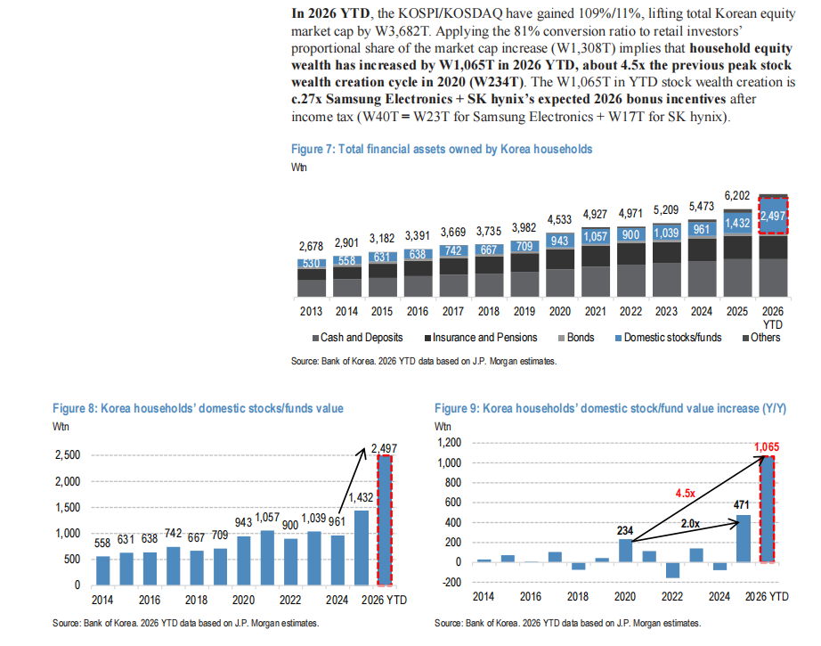
一句话核心：KOSPI 暴涨让韩国家庭账面多了 1000+ 万亿韩元（约 7000 亿美元），但按历史 1.3% 的财富-消费转化率只能带来约 14 万亿韩元消费——且 64.5% 的股票在最富 20% 家庭手里，财富效应有限且高度绑定 AI 存储周期。
背景与关键数据：JPM 报告页补充的猛料：2026 YTD KOSPI +109%（KOSDAQ +11%），韩股总市值 +3,682 万亿韩元；家庭股票财富增值 1,065 万亿，是 2020 年上一轮峰值（234 万亿）的 4.5 倍，相当于三星电子+SK 海力士 2026 年预期税后奖金总额的约 27 倍。行为转变：散户从 2025 年净卖出 26 万亿转为 2026 年净买入 64 万亿；政府收紧房地产，堵住"股市→楼市"的老路径。
图片解读：报告页含三图——Figure 7：韩国家庭金融资产总额堆叠图（2013 年 2,678 → 2026YTD 6,202 万亿韩元，其中国内股票/基金从 530 涨到 2,497，占比大幅抬升）；Figure 8：家庭持有国内股票/基金的价值曲线（2026 一年近乎翻倍）；Figure 9：同比增量柱状图（+1,065 万亿，标注 4.5x vs 2020 年）。
为什么重要：这是研究财富效应（wealth effect）的绝佳活案例：美股财富效应强（转化率高、持股广）支撑了美国消费韧性；韩国持股集中+不信任股市，账面富贵难变成消费。对投资的提示有两层：一是韩国内需股别因为股市涨就追（传导弱）；二是整个韩国故事是 AI 存储周期的杠杆放大版——三星/海力士见顶之日，财富效应反转（呼应帖 10 大摩对存储股的警告）。
延伸知识：边际消费倾向（MPC）：穷人拿到 1 块钱花掉的比例远高于富人——所以同样的财富增量，分配越集中，拉动消费越少。这也是各国发消费刺激时倾向定向给中低收入群体的原因。对照中国：中国家庭金融资产中股票占比更低、房产占比 60%+，所以中国的"财富效应"主战场在房价而不是股价。
帖 15（13:26）大摩：上调中国 GDP 至 4.8%，但经济仍是"双速" #经济数据
帖子原文：
摩根斯坦利：在本次年中展望中，我们将中国今年实际GDP增速预测从4.7%上调至4.8%，并将名义增速从4.9%上调至5.4%。我们认为，在全球资本开支超级周期的支撑下，出口与投资还有1–2年红利。我们在市场交流中得到的反馈，大家普遍认同我们对于经济呈现"双速"格局、再通胀偏窄的判断：在持续的结构性外需以及国内政策支持的推动下，高速增长的新经济板块或仍保持强劲。同时，低速增长的旧经济（表现为消费疲软以及房地产市场的持续调整）预计将持续低迷，投资者普遍认为短期内难以看到拐点。
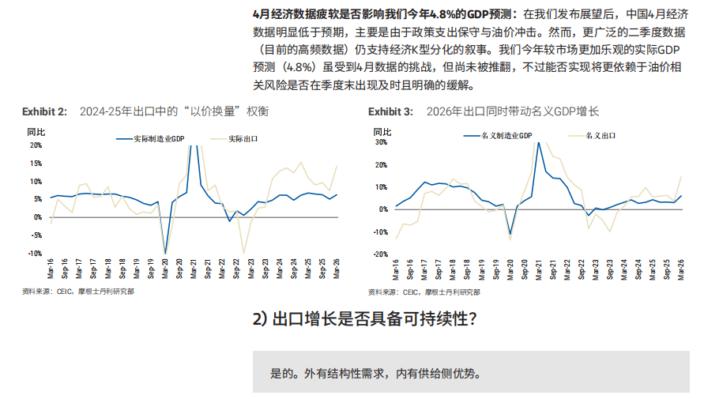
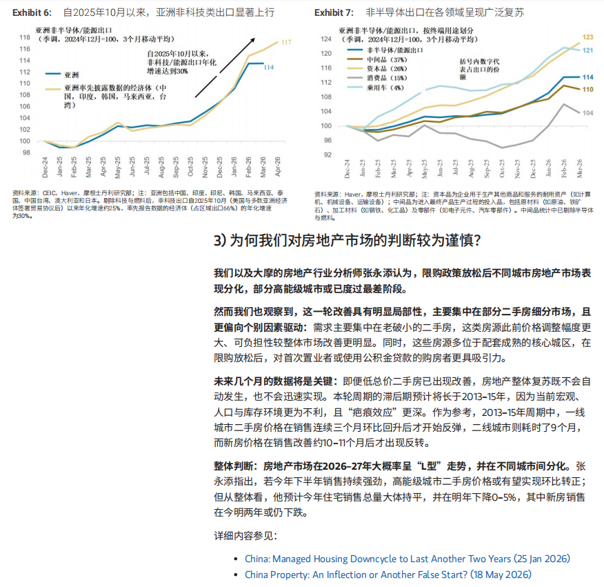
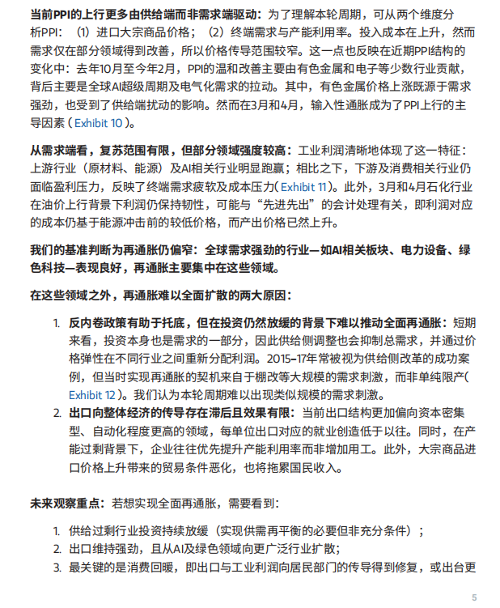
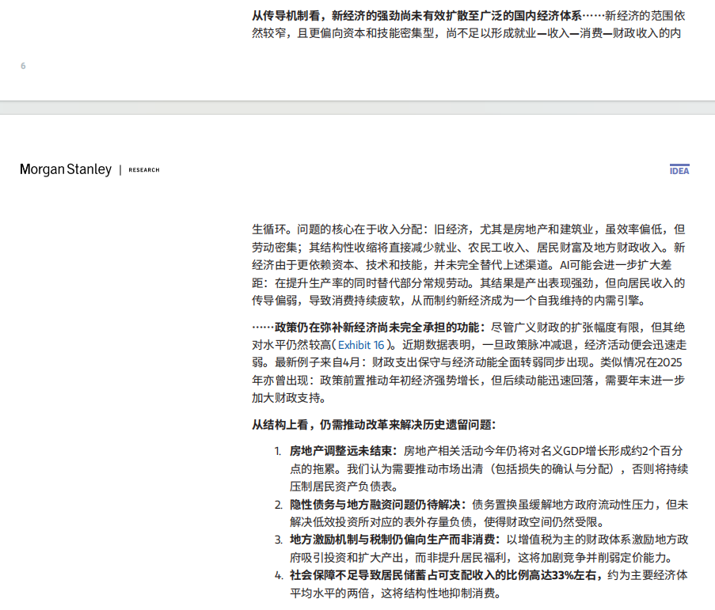
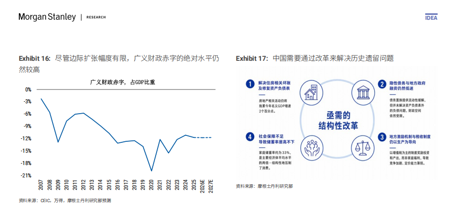
一句话核心：大摩小幅上调中国 2026 年实际 GDP 至 4.8%、名义至 5.4%，逻辑是全球 AI 资本开支超级周期给出口"还有 1-2 年红利"；但新旧经济"双速"分化、再通胀偏窄的判断不变。
背景与关键数据：注意名义增速上调幅度（4.9%→5.4%）大于实际（4.7%→4.8%）——隐含平减指数预期改善（与 OECD 帖 12 转正预测同向）。报告 Q&A 部分回答了两个关键问题：①4 月数据疲软是否动摇 4.8%？——不至于，但"不能否认将更依赖油价相关风险能否在季度末及时缓解"；②出口增长可持续吗？——"是的。外有结构性需求，内有供给侧优势"。出口策略是**"以价换量"**：实际出口量涨幅大于名义（降价抢份额）。
图片解读：图 1：Exhibit 2/3——实际制造业 GDP vs 实际出口、名义制造业 GDP vs 名义出口的同比对比，显示量价剪刀差；图 2-4：报告问答文字页（房地产为何判断为"持续调整"、再通胀辩论、政策预期等，原文较密）；图 5：Exhibit 16——广义财政赤字占 GDP 比重 2007-2027E（从 -3% 一路走阔到 2020 年代约 -12% 至 -21% 区间，近年企稳在 -12% 左右：财政扩张边际有限但绝对水平已很高）+ Exhibit 17——中国需要结构性改革解决的四大历史遗留问题：住房失衡与居民资产负债表修复、隐性债务与城投、社保不足导致储蓄率高企、地方激励与税收制度。
为什么重要：4.8% 与 OECD 的 4.5%（帖 12）的差异主要就在出口红利能持续多久。大摩 Exhibit 17 那四个结构问题，恰好与 Jason 今天的中国线选题一一对应：住房（帖 13 收储/REITs）、隐性债务（帖 13 城投化债）、社保与储蓄（帖 18 养老金转负）、地方税收（帖 5 存量土地、帖 1 财产税暗示）——可见 Jason 的选帖是有意围绕"资产负债表修复"这个总主题的。
延伸知识："双速经济"（two-speed economy）：新经济（出口制造、AI 链）以 8-10% 速度增长、旧经济（地产、消费）零增长甚至收缩，加权平均出 4-5%。投资上的推论是：指数平庸但结构剧烈——这正是大摩"偏好 A 股、capex 重于消费"（帖 10）的逻辑闭环。
帖 16（13:45）高盛：黄金 2026 年底看回 $5,400 #金融
帖子原文：
高盛：我们的全球大宗商品团队仍然看多黄金，预计金价将在 2026年底回到 US$5,400/盎司，不过团队对短期走势更加谨慎。我们给金矿股做模型时，更偏向于采用远期曲线和实际已发生价格，不是完全采用大宗商品团队的乐观目标价，到年底为US$4,626/盎司。
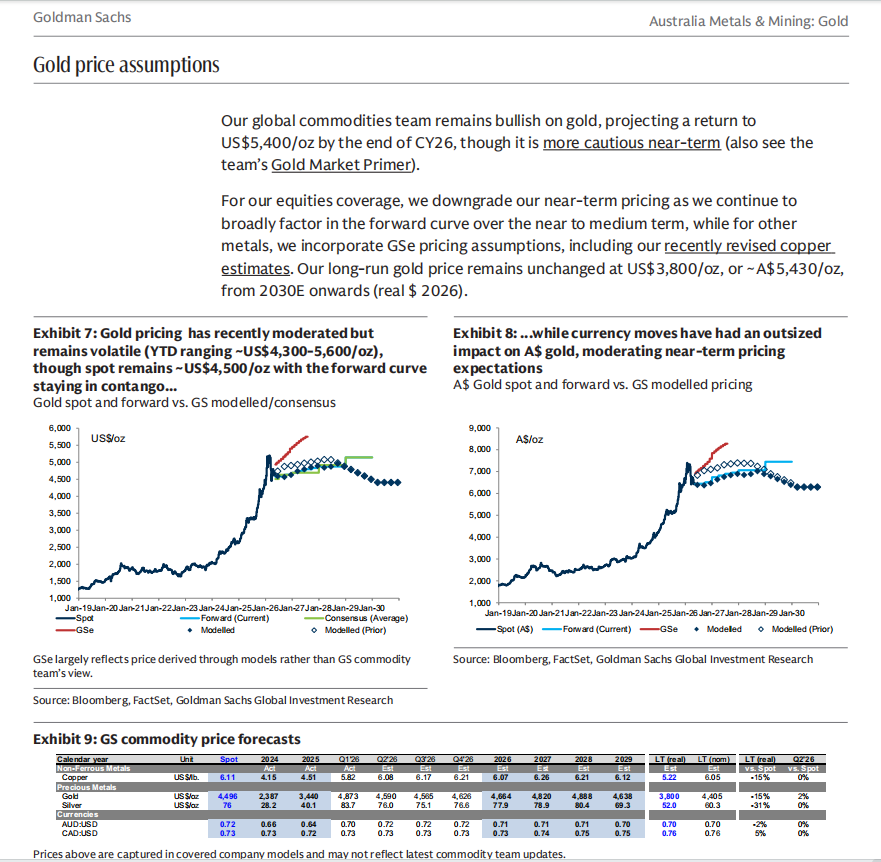
一句话核心：高盛大宗团队维持 2026 年底金价 $5,400/盎司的看多目标，但短期谨慎；其股票研究团队给金矿股建模时更保守，采用约 $4,626 的远期曲线价格。
背景与关键数据：一个机构内部的"双轨定价"很有信息量：商品团队的 $5,400 是基于央行购金+ETF 回流的需求模型（呼应帖 4、8、9 的全部逻辑链）；股票团队不敢全盘采用，用远期曲线（市场实际可锁定的价格）做盈利预测——这说明卖方自己也认为目标价与可交易价格之间有不小的"信仰差"。
图片解读：高盛报告"Gold price assumptions"页：左侧文字说明下调金价假设至约 $4,626/盎司的理由（用远期曲线与已实现价格），配 Exhibit（金价假设 vs 远期曲线对比图、商品价格预测总表）——图表字号小，结论看正文即可。
为什么重要：今天黄金四连发（帖 4 流量数据 → 帖 8 存量里程碑 → 帖 9 历史纵深 → 帖 16 卖方目标价）构成完整逻辑链。对操作的提示：买金矿股的人要明白股价隐含的金价假设比现货目标价保守得多——若金价真到 $5,400，金矿股有"戴维斯双击"空间（盈利上修+估值上修）；反过来短期金价回调时，矿股跌幅也会放大（经营杠杆）。
延伸知识：金矿股的经营杠杆：假设全维持成本（AISC）$1,500/盎司，金价从 $4,000 涨到 $5,000（+25%），矿企每盎司利润从 $2,500 涨到 $3,500（+40%）——这就是为什么牛市里矿股涨幅常是金价的 1.5-2.5 倍，熊市反之。看矿股先看 AISC 和储量寿命，再看金价假设。
帖 17（14:03）vtchakarova：俄乌走向终局？还有一条白令海峡隧道 #其他国家经济
帖子原文：
vtchakarova：据说俄美之间将建立隧道，德国、法国、英国制定与俄罗斯进行和平谈判的计划，泽连斯基发表公开信给普京，呼吁结束战争。克里姆林宫确认已看过泽连斯基的信件。普京表示，特朗普已要求莫斯科为乌克兰和平协议做出妥协，如果基辅也愿意，俄罗斯也愿意这样做，乌克兰正在失去领土。泽连斯基发推，5月，俄罗斯在战场上几乎没有取得任何实质性成果。而俄罗斯每个月损失3万到3.5万名士兵。
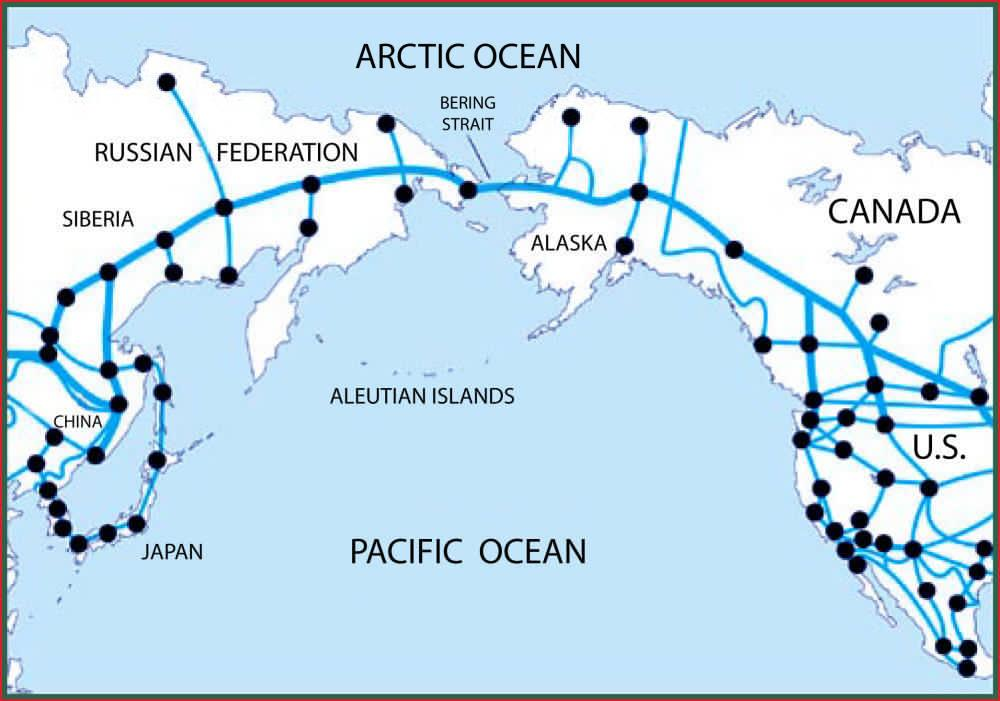
一句话核心：俄乌和谈信号密集：泽连斯基公开信呼吁结束战争、普京称愿在美方施压下妥协、欧洲三强制定谈判计划——甚至传出俄美"白令海峡隧道"的宏大设想。
背景与关键数据：vtchakarova（Velina Tchakarova）是地缘政治分析师。信息要点分三层：①和谈动能：泽连斯基公开信 + 克宫确认收到 + 普京表态"基辅愿意俄也愿意"，这是开战以来最接近双向台阶的表述；②战场僵局是谈判的底色：双方说法对冲——普京说"乌克兰正失去领土"，泽连斯基说"俄军 5 月几乎无实质进展、每月损失 3-3.5 万人"，都在为谈判桌定价；③隧道传闻：俄美之间经白令海峡修隧道——更多是关系正常化的象征性叙事。
图片解读：一张白令海峡隧道构想图：横跨太平洋北缘的铁路/运输走廊，从西伯利亚经白令海峡到阿拉斯加、接加拿大与美国本土，并有支线连中国、日本。工程上这是百年级别的设想（海峡 82 公里、冻土、极地施工），看作"俄美和解叙事的图腾"即可。
为什么重要：若俄乌停战落地，市场影响排序大概是：欧洲资产（重建需求+能源贴水收窄）> 油气（地缘溢价回落，呼应帖 3 油价下跌）> 黄金（短期利空但帖 9 已论证央行购金不依赖这场战争）> 全球粮价化肥（俄乌是粮肥大国，利于缓解帖 11 的食品通胀）。注意 Jason 的标签是 #其他国家经济——他更关心的是经济秩序重组而非军事本身。
延伸知识：白令海峡隧道是个百年老梗：沙俄 1905 年就研究过，2007 年俄罗斯还正式提过 TKM-World Link 方案（预算 650 亿美元）。它每次被重提，都对应俄美关系的"蜜月幻想期"——把它当作情绪指标比当作基建项目靠谱。
帖 18（14:19）浙大论文：「十五五」中国老龄化与中长期人口态势 #论文或书籍推荐
帖子原文：
浙大："十五五"时期中国老龄化程度与中长期人口发展态势研究 #论文或书籍推荐
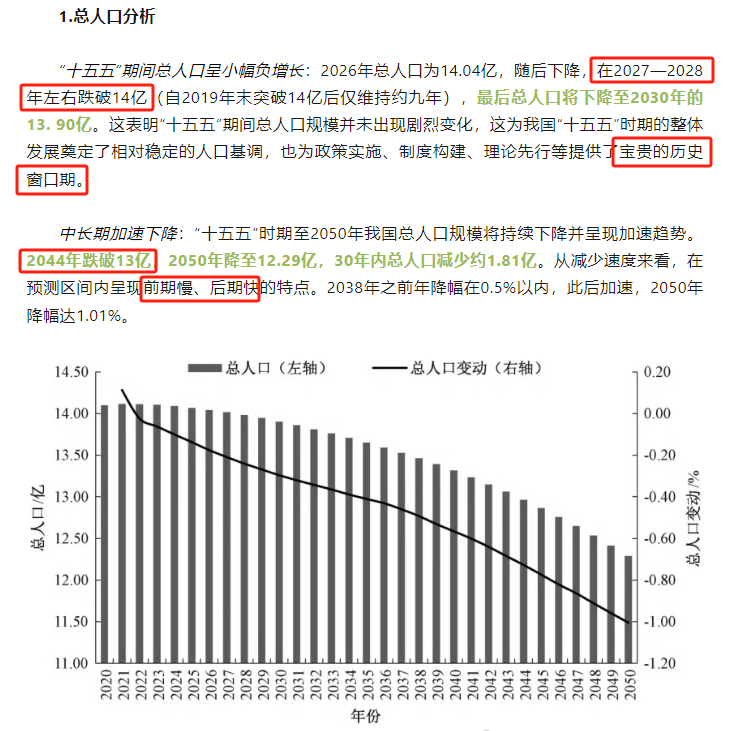
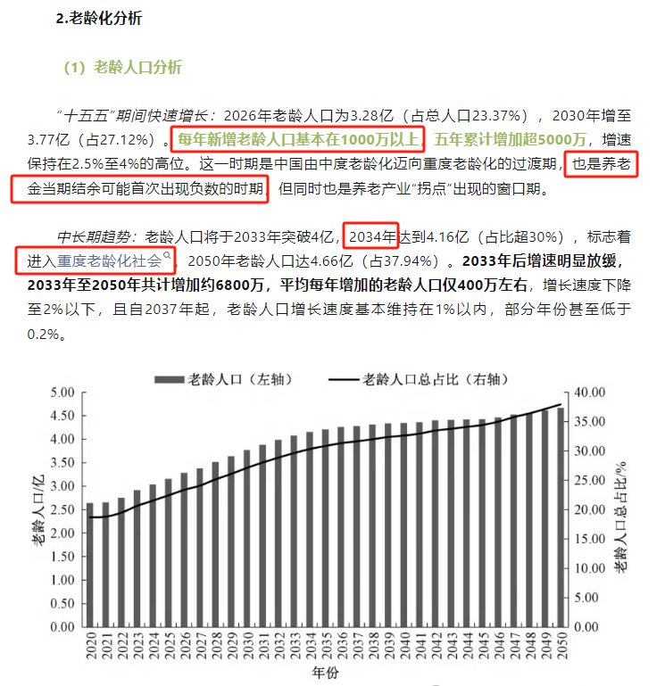
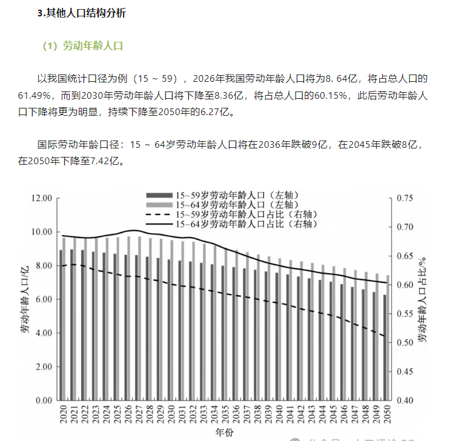
一句话核心：浙大研究测算："十五五"（2026-2030）是人口变化相对温和的"宝贵历史窗口期"，但之后坡道很陡——2033 年进入重度老龄化、养老金当期结余将首现负数、2050 年劳动年龄人口比现在少 2 亿多。
背景与关键数据：三张图三组数——①总人口：2026 年 14.04 亿后持续负增长，2027-2028 年跌破 14 亿，2030 年 13.90 亿；中长期 2044 年跌破 13 亿，降幅前慢后快（2050 年加速至每年 -1.01%）；②老龄化：2026 年老年人口 3.28 亿（占 23.37%）→ 2030 年 3.77 亿（27.12%），每年新增 1000 万+；2033 年突破 4 亿、占比 30%，进入"重度老龄化社会"；2050 年 4.66 亿（37.94%）；论文点名这一时期"也是养老金当期结余可能首次出现负数的时期"；③劳动年龄人口（15-59 岁）：2026 年 8.64 亿（61.49%）→ 2030 年 8.36 亿 → 2050 年 6.27 亿；国际口径（15-64）2036 年跌破 9 亿、2050 年 7.42 亿。
图片解读：三张论文页均为"文字结论 + 长期预测图"：图 1 总人口（左轴柱）与人口变动率（右轴线）2020-2050，变动率持续为负且加深；图 2 老年人口规模与占比双升曲线，红框标注 2033/2034 年关键节点与"重度老龄化社会"；图 3 劳动年龄人口三条口径线齐齐下行。
为什么重要：这篇论文给今天好几帖提供了分母：劳动人口萎缩+老龄化加速 → 储蓄率、利率、地产需求、社保缺口全部被重新定价。"十五五是窗口期"的政策含义：延迟退休、个人养老金、社保全国统筹、生育补贴都得在这五年密集落地，错过窗口成本指数级上升。对资产配置：人口是最慢但最确定的变量——养老、医疗、自动化（机器人替代劳动力）是确定性需求，而对长期利率和房地产，它是持续的下拉力。
延伸知识：联合国口径下，60 岁以上占比超 10% 为"老龄化社会"、超 20%（或 65+ 超 14%）为"深度老龄化"、65+ 超 21% 为"超老龄化"。日本 2005 年进入超老龄化后的剧本——通缩长期化、国债占 GDP 250%、央行变相财政化——是中国政策层最警惕的参照系。养老金当期结余转负意味着从"攒钱"切换到"吃老本"，届时要么提高缴费/延迟退休，要么财政补贴/国资划转，这正是帖 15 大摩 Exhibit 17 里"社保不足"改革项的由来。
帖 19（14:29）脉脉春招洞察：一半程序员的公司在"优化" #职业
帖子原文：
脉脉26春招洞察：AI浪潮持续重塑国内用人市场。程序员正处在职业焦虑之中。受访的程序员中有54.03%表示，过去一年所在公司发生过程序员相关岗位的优化。这其中，有34.93%的公司优化人员的规模达到10%及以上。#职业
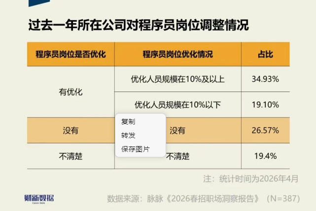
一句话核心：脉脉《2026 春招职场洞察报告》：54.03% 的受访程序员表示过去一年公司"优化"过程序员岗位，其中近 2/3（占总数 34.93%）的公司优化规模在 10% 以上。
背景与关键数据：财新数据制图，样本 N=387（注意样本量不大，方向性参考）。拆解：优化 ≥10% 的占 34.93%、优化 <10% 的占 19.10%（合计 54.03%）、明确"没有"的仅 26.57%、"不清楚"19.4%。统计时间 2026 年 4 月。
图片解读：表格图"过去一年所在公司对程序员岗位调整情况"，三列：是否优化/优化情况/占比。图中央有一个手机长按菜单（复制/转发/保存图片）的残影——是原图截图时带上的，不影响数据。评论区的吐槽值得一记："怎么数据报告里都得用优化代替裁员俩字了"——"优化"就是裁员的委婉语。
为什么重要：与帖 7（美国 AI 归因裁员 8.7 万）镜像对照：AI 对程序员岗位的替代是全球同步的，中国叠加了行业自身的降本周期。这条线索与帖 2（考研降温）共同指向高学历劳动力市场的供需重构：码农曾是中国学历溢价最高的职业，如今"高薪+稳定"的预期被打破，会传导到教育选择（计算机专业报考）、一线城市购房需求、乃至消费信心。
延伸知识：委婉语通胀（euphemism treadmill）在经济数据里很常见：裁员→优化→毕业→向社会输送人才；经济衰退→负增长→阶段性承压。读财经新闻时把委婉语还原成本义，是信息解读的基本功。另一个视角：Jevons 悖论的就业版——AI 让单个程序员产出翻倍，理论上可能扩大软件总需求、最终增加岗位（历史上 ATM 与银行柜员的故事），但过渡期的结构性失业是真实的，且这次替代速度远快于技能再培训速度。
今日全图索引
| 帖 | 时间 | 主题 | 标签 | 图片 |
|---|---|---|---|---|
| 1 | 02:43 | 离婚分割近亿财产案 → 代际转移与税 | #TAX | post1_img1~3 |
| 2 | 02:54 | 考研报名三连降（自制图） | #自制图表 | post2_img1 |
| 3 | 11:24 | 美伊谈判僵局、美股轮动、联储加息预期 | #金融 | post3_img1~4 |
| 4 | 11:31 | WGC：央行 4 月重新购金 | #金融 | post4_img1~3 |
| 5 | 11:35 | 存量土地补缴出让金 = 土地财政 2.0 | #TAX | post5_img1~2 |
| 6 | 11:41 | 中信建投：美国赤字下修至 1.9 万亿 | #其他国家经济 #金融 | post6_img1~7 |
| 7 | 11:51 | Challenger：AI 裁员 8.7 万创纪录 | #其他国家经济 | post7_img1 |
| 8 | 12:00 | 黄金占央行外储 27% 首超美债 | #金融 | post8_img1~2 |
| 9 | 12:03 | 瑞银：央行购金始于 2008 | #金融 | post9_img1~2 |
| 10 | 12:21 | 大摩亚洲策略：商品链>服务链 | #股市 | post10_img1~2 |
| 11 | 12:25 | 泰国大米 +20%，食品通胀传导 | #金融 | post11_img1~3 |
| 12 | 12:53 | OECD 预测：中国平减指数 2026 转正 | #经济数据 | post12_img1~2 |
| 13 | 13:14 | 保障房收购 → REITs 化债链条 | #TAX | post13_img1~6 |
| 14 | 13:20 | JPM：韩国股市财富效应测算 | #其他国家经济 | post14_img1 |
| 15 | 13:26 | 大摩上调中国 GDP 至 4.8% | #经济数据 | post15_img1~5 |
| 16 | 13:45 | 高盛：金价 2026 底看 $5,400 | #金融 | post16_img1 |
| 17 | 14:03 | 俄乌和谈信号 + 白令海峡隧道 | #其他国家经济 | post17_img1 |
| 18 | 14:19 | 浙大老龄化论文：2033 重度老龄化 | #论文或书籍推荐 | post18_img1~3 |
| 19 | 14:29 | 脉脉：54% 程序员公司在"优化" | #职业 | post19_img1 |
运行说明（自动任务备注）
- 本报告由 2026-06-04 的
jason-zsxq-daily-digest定时任务自动生成。帖子时间为页面显示时间（美西时区）。 - 共抓取 Jason 不跪当日 19 帖、50 张配图。图片未走"截图"方式，而是从页面中提取原图保存（更清晰）；传输过程中短暂借用了系统剪贴板，已恢复其原有内容。
- 全程只读，未进行任何点赞/评论/发帖操作。
- 知识星球官方 API 对非官方工具有访问限制（code 1059），本次内容均直接取自已登录浏览器中渲染的页面数据。